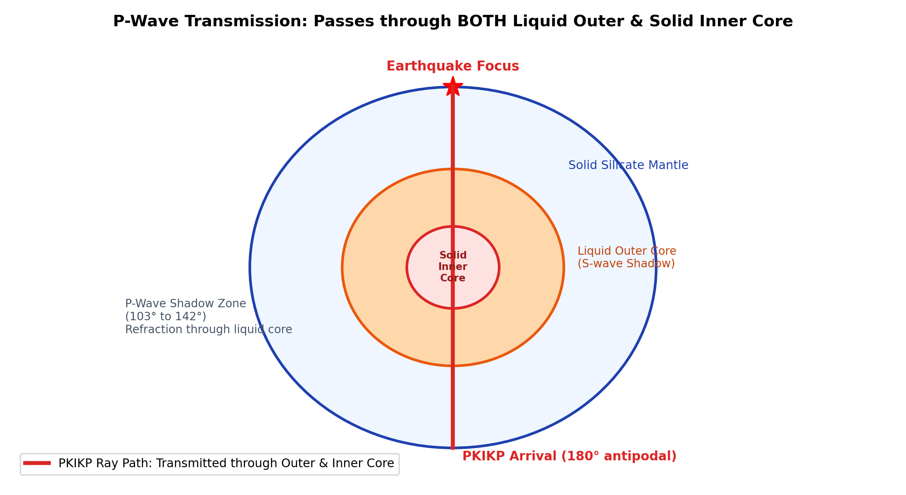

Q044: Seismic P-Wave Transmission Through Deep Earth Core Phases
The internal radial structure of the Earth was unveiled by tracking how seismic body waves penetrate through the deep mantle and core:
- Standard Seismological Notation:
- $P$: Compressional wave in the mantle.
- $S$: Shear wave in the mantle.
- $K$: Compressional wave propagating through the liquid outer core (from German Kern, core).
- $I$: Compressional wave traversing the solid inner core.
- $J$: Shear wave traversing the solid inner core ($S$-wave in inner core).
- $c$: Reflection from the core-mantle boundary (CMB, e.g., $PcP, ScS$).
- $i$: Reflection from the inner core boundary (ICB, e.g., $PKiKP$).
- Transmission Through Outer Core: At the Core-Mantle Boundary ($2891\text{ km}$ depth), compressional $P$-waves refract sharply downward into the liquid iron outer core as $K$-waves because $P$-wave velocity drops abruptly from $13.7\text{ km/s}$ in the lowermost mantle ($D''$ layer) to $8.1\text{ km/s}$ in the fluid core due to the loss of shear rigidity ($\mu = 0$).
- Transmission Through Inner Core: At the Inner Core Boundary ($5150\text{ km}$ depth), $P$-waves penetrate directly into the crystalline solid iron-nickel inner core as $I$-waves, where velocity jumps up to $\sim 11.0\text{ km/s}$.
- The PKIKP Phase: A compressional wave traveling from the crust through the mantle ($P$), refracting into the outer core ($K$), traversing the solid inner core ($I$), emerging through the opposite outer core ($K$), and ascending through the mantle ($P$) to the antipodal surface is designated as $PKIKP$.

Before 1936, the core was believed to be entirely a uniform liquid cavity producing a complete shadow zone between epicentral angles $\Delta = 103^\circ$ and $143^\circ$:
Because $v_p$ drops from $13.7\text{ km/s}$ to $8.1\text{ km/s}$ at the CMB, the ray bends towards the normal ($\sin i_K = \frac{v_K}{v_P}\sin i_P$), focusing rays toward angles $\ge 143^\circ$ and creating the classic $P$-wave shadow zone between $103^\circ$ and $143^\circ$.
- The Faint Arrivals: Danish seismologist Inge Lehmann analyzed sensitive seismograms in Europe from earthquakes in New Zealand and discovered faint, early $P$-wave arrivals within the shadow zone ($\Delta \approx 110^\circ-135^\circ$).
- The Explanation: Lehmann demonstrated that these arrivals were not diffraction artifacts, but compressional waves that had refracted through a higher-velocity solid inner core ($PKIKP$) or reflected off its boundary ($PKiKP$).
- The Invariant Fact: Therefore, the P wave is transmitted through the outer as well as the inner core!

| Wave Phase | Outer Core Behaviour ($2891-5150\text{ km}$) | Inner Core Behaviour ($5150-6371\text{ km}$) | Surface Shadow Zone |
|---|---|---|---|
| P-Wave (Compressional) | Transmitted as $K$-wave ($v_p = 8.1 \to 10.3\text{ km/s}$). Strongly refracted. | Transmitted as $I$-wave ($v_p \approx 11.0\text{ km/s}$). Refracts through center. | Partial shadow zone ($103^\circ-143^\circ$) containing weak $PKIKP$ and $PKiKP$ arrivals. |
| S-Wave (Shear) | Completely Blocked ($v_s = 0$ because shear modulus $\mu = 0$ in liquid). | Can propagate theoretically as $J$-wave converted from $P$ ($PKJKP$, exceedingly faint). | Massive permanent shadow zone extending from $103^\circ$ across the entire antipode to $180^\circ$! |
Detailed Seismological Forensic Analysis:
- Primary ($P$) waves are longitudinal compressional waves. Their velocity is governed by $v_p = \sqrt{(K + \frac{4}{3}\mu)/\rho}$. Because the bulk modulus of incompressibility $K > 0$ for all physical states of matter, $P$-waves possess the unique physical capability to propagate through both fluids and solids.
- When a $P$-wave reaches the Core-Mantle Boundary (CMB, $2891\text{ km}$ depth), it refracts into the fluid outer core as a compressional wave ($K$).
- Upon reaching the Inner Core Boundary (ICB, $5150\text{ km}$ depth), it is transmitted directly through the solid iron-nickel inner core as a compressional wave ($I$), giving rise to the well-documented global seismic phase $PKIKP$.
- Hence, statement (C) is completely and indisputably true.
Detailed Refutation:
- While a minor fraction of $P$-wave energy reflects off the inner core boundary (producing the faint $PKiKP$ phase), the vast majority of seismic energy is refracted and transmitted directly through the solid inner core as $I$-waves ($PKIKP$).
- Claiming that $P$-waves are merely reflected from the inner core denies the existence of the inner core transmission phases that established its solid physical state. Thus, (B) is false.
Detailed Refutation:
- Although reflection at the CMB does occur (producing the $PcP$ phase), the defining characteristic of $P$-waves is that they are transmitted and refracted into the core as $PKP$ waves.
- Saying "The P wave reflected from the mantle-core boundary" implies that $P$-waves do not penetrate the core, which contradicts the fundamental discovery of the liquid outer core by R.D. Oldham in 1906. Hence, (A) is inaccurate.
Detailed Refutation:
- At the Mohorovičić discontinuity (Moho), incident $P$-waves are primarily refracted into the upper mantle ($Pn$ phase), with only a fraction undergoing post-critical reflection ($PmP$).
- Describing the $P$-wave globally as merely "reflected from the crust-mantle boundary" is entirely misleading and trivial compared to its planetary core transmission properties.
| Seismic Phase Code | Ray Path Trajectory Through Earth | Observed Epicentral Distance ($\Delta$) | Significance in Discovering Core Structure |
|---|---|---|---|
| $PcP$ | $P$-wave in mantle reflected upward at the Core-Mantle Boundary (CMB). | $0^\circ$ to $90^\circ$ | Constrained the precise depth of the liquid core boundary ($2891\text{ km}$, Gutenberg 1914). |
| $PKP$ ($P'$) | Refracted into liquid outer core ($K$), misses inner core, emerges in mantle ($P$). | $>143^\circ$ (and caustic branch back to $142^\circ$) | Confirmed the fluid nature of the outer core (R.D. Oldham 1906). |
| $PKIKP$ | Mantle ($P$) $\to$ Outer Core ($K$) $\to$ Inner Core ($I$) $\to$ Outer Core ($K$) $\to$ Mantle ($P$). | $110^\circ$ to $180^\circ$ | Discovered the solid inner core (Inge Lehmann 1936). |
| $PKiKP$ | Mantle ($P$) $\to$ Outer Core ($K$) $\to$ reflected off Inner Core Boundary ($i$). | $100^\circ$ to $140^\circ$ | Pinpointed the exact depth of the Inner Core Boundary ($5150\text{ km}$). |
| $PKJKP$ | Compressional wave converting to shear wave ($J$) in solid inner core. | Variable ($>120^\circ$) | Ultimate seismic proof of the non-zero shear modulus ($\mu > 0$) of the solid inner core. |
A $P$-wave in the lowermost mantle ($v_1 = 13.7\text{ km/s}$) strikes the liquid outer core ($v_2 = 8.1\text{ km/s}$). Does total internal reflection occur? Calculate the angle of refraction $r$ for an angle of incidence $i = 45^\circ$.
Step-by-Step Solution:
Total internal reflection can only occur when a wave travels from a lower-velocity to a higher-velocity medium ($v_1 < v_2$). Here $v_1 > v_2$ ($13.7 > 8.1\text{ km/s}$); therefore, total internal reflection is physically impossible, and energy is always transmitted!
Applying Snell's law:
$$\frac{\sin i}{v_1} = \frac{\sin r}{v_2} \implies \sin r = \left(\frac{v_2}{v_1}\right)\sin i$$ $$\sin r = \left(\frac{8.1}{13.7}\right)\sin 45^\circ = 0.5912 \times 0.7071 \approx 0.4180$$ $$r = \arcsin(0.4180) \approx 24.71^\circ$$Final Answer: The refracted ray bends steeply toward the normal at an angle $r \approx 24.7^\circ$.
Calculate the vertical diametric travel time for a $PKIKP$ ray traversing the Earth from the North Pole to the South Pole ($\Delta = 180^\circ$). Assume two mantle sections (thickness $2891\text{ km}$ each, average $v_p = 10.5\text{ km/s}$), two outer core sections (thickness $2259\text{ km}$ each, average $v_p = 9.2\text{ km/s}$), and the inner core diameter ($2442\text{ km}$, average $v_p = 11.2\text{ km/s}$).
Step-by-Step Solution:
$$t_{\text{mantle}} = 2 \times \frac{2891\text{ km}}{10.5\text{ km/s}} = 2 \times 275.33\text{ s} = 550.67\text{ s}$$ $$t_{\text{outer core}} = 2 \times \frac{2259\text{ km}}{9.2\text{ km/s}} = 2 \times 245.54\text{ s} = 491.09\text{ s}$$ $$t_{\text{inner core}} = \frac{2442\text{ km}}{11.2\text{ km/s}} \approx 218.04\text{ s}$$ $$t_{\text{total}} = 550.67 + 491.09 + 218.04 = 1259.8\text{ seconds} \approx 21\text{ minutes } 0\text{ seconds}$$Final Answer: Total antipodal diametric travel time is approximately $1260\text{ seconds}$ ($21\text{ minutes}$).
State the exact angular limits of the primary $P$-wave shadow zone on the surface of the Earth and explain its cause.
Step-by-Step Solution:
The $P$-wave shadow zone extends from epicentral distance $\Delta = 103^\circ$ to $\Delta = 143^\circ$ (or $\sim 104^\circ-140^\circ$). It is caused by the dramatic velocity reduction at the core-mantle boundary ($13.7 \to 8.1\text{ km/s}$), which refracts rays entering the core deeply downward, leaving a shadow zone between rays that graze the mantle-core boundary ($\sim 103^\circ$) and the first refracted rays exiting the core ($\sim 143^\circ$).
Seismic observations indicate that in the solid inner core, $v_p \approx 11.2\text{ km/s}$ and Poisson's ratio is extraordinarily high ($\nu \approx 0.44$). Estimate the inner core shear wave velocity $v_s$.
Step-by-Step Solution:
$$\frac{v_p}{v_s} = \sqrt{\frac{2(1 - \nu)}{1 - 2\nu}} = \sqrt{\frac{2(1 - 0.44)}{1 - 2(0.44)}} = \sqrt{\frac{2(0.56)}{1 - 0.88}} = \sqrt{\frac{1.12}{0.12}} = \sqrt{9.333} \approx 3.055$$ $$v_s = \frac{v_p}{3.055} = \frac{11.2\text{ km/s}}{3.055} \approx 3.67\text{ km/s}$$Final Answer: Inner core shear wave velocity is approximately $3.67\text{ km/s}$ (showing high ductility near its melting point).
Why must the outer core be a fluid rather than a solid to generate Earth's magnetic field?
Step-by-Step Solution:
The Earth's dipolar magnetic field is maintained by the geodynamo mechanism. This requires vigorous, organized fluid convection of an electrically conducting liquid (molten iron-nickel alloy). Thermal convection driven by core cooling combined with compositional convection (light element expulsion during inner core crystallization) is organized into helical convective columns by the Coriolis force. A rigid solid cannot sustain convective fluid flow; thus, a fluid outer core is an absolute prerequisite.
What observation demonstrates that the Earth's solid inner core is seismically anisotropic?
Step-by-Step Solution:
$PKIKP$ seismic waves traveling nearly parallel to the Earth's rotational axis (polar paths) travel approximately $3-4\%$ faster than $PKIKP$ waves traveling in the equatorial plane. This demonstrates cylindrical seismic anisotropy, caused by the preferred crystalline alignment (lattice preferred orientation, LPO) of hexagonal close-packed (hcp) iron crystals aligned with Earth's spin axis.
For normal incidence, the acoustic reflection coefficient is $R = \frac{\rho_2 v_2 - \rho_1 v_1}{\rho_2 v_2 + \rho_1 v_1}$. Calculate $R$ at the CMB given mantle parameters ($\rho_1 = 5560\text{ kg/m}^3, v_1 = 13.7\text{ km/s}$) and core parameters ($\rho_2 = 9900\text{ kg/m}^3, v_2 = 8.1\text{ km/s}$).
Step-by-Step Solution:
$$Z_1 = \rho_1 v_1 = 5560 \times 13700 = 7.617 \times 10^7\text{ kg/(m}^2\cdot\text{s)}$$ $$Z_2 = \rho_2 v_2 = 9900 \times 8100 = 8.019 \times 10^7\text{ kg/(m}^2\cdot\text{s)}$$ $$R = \frac{8.019 - 7.617}{8.019 + 7.617} = \frac{0.402}{15.636} \approx +0.0257$$Final Answer: The reflection coefficient is tiny ($R \approx +0.026$); over $97\%$ of normal-incident $P$-wave energy is transmitted across the CMB into the core!
What is the seismological evidence for the "super-rotation" of the inner core?
Step-by-Step Solution:
By comparing the arrival waveforms of doublet earthquakes (earthquakes occurring decades apart on the same fault rupture) recorded at the same seismic stations, seismologists observed small progressive shifts in travel times of $PKIKP$ waves sampling the anisotropic inner core. This indicated that the inner core rotates slightly faster than the overlying mantle and crust (by $\sim 0.2-1.0^\circ$ per year), driven by electromagnetic torques from the geodynamo.